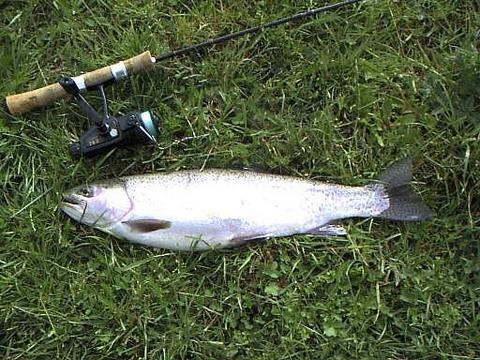
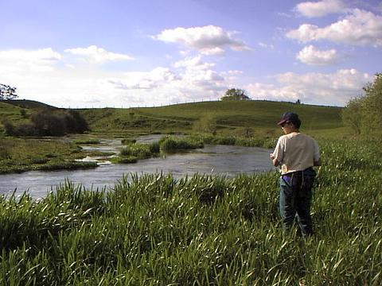

エッセイ
バルワーさんが直してくれたもの
私は41歳、竜二君は20歳だった。息子ほど年齢の離れた釣り友達は、ワイカト大学のクラスメートでもあった。竜二君はアジア系の顔立ちで、髪を長く伸ばして後ろで束ねていたから、生物学の野外授業で初めて顔を見た時に、てっきりタイかシンガポールからの留学生だと思っていた。それは向こうも同じで、私のことをアジア某国からの留学生だと思っていたらしい。彼曰く、グレゴリーのデイパックを背負っている私は、顔はどうであれ、やはり日本人かと思ったそうである。
野外授業では、渓流の生物を電気ショックを使って調べた。とあるカーブの淵で、シビれて石の間から追い出された特大のウナギをネットに収め、歓喜の声を上げ、同級生たちに誇らしげに見せて、どうやってウナギを食べるかを熱心に英語で解説していた竜二君は、どう見ても日本人には見えなかった。
彼と初めて話をしたときのことは良く覚えていない。しかし、初めて二人で釣りに行った日のことは良く覚えている。釣りはまったくの素人の彼に、ワイカト川支流のスプリングクリークで、スピニングの釣りならなんとかなるだろうと私が誘ったのだ。いつもとは違う区間を狙ってみようと思い、ホテルの下流へと向かったのは、４月も下旬のとある日曜日だった。この区間なら、歩きやすいし、なにより魚が沢山居る。実際、無垢な虹鱒たちは、初心者の竜二君を派手なジャンプで暖かく迎えてくれ、また一人、熱心な釣り人が生まれたのであった。

その日、大きな松の根元にある淵を釣っていた時、バキッと大きな音がした。驚いて振り向くと、根がかりしたルアーを無理やりロッドで引っ張っていた竜二君が、力を入れすぎてロッドを折ってしまったのだ。
「しまった！ 根がかりの時はラインを持って引っ張ることを最初に説明しておくべきだった.......」
後悔してみたもののすでに遅く、日本から持ち込んでいたフェンウィックのスピニングロッドは、第４ガイドあたりでポッキリと折れていた。ショックだった。このロッドは、思えば不運な経歴の持ち主で、桜鱒狙いで買い込んだものの、ウグイを１尾釣ったきり、ろくに使う機会の無いまま、長いこと押入れにしまい込んであったのだった。
「ゴウさん、ごめんなさい」
神妙な顔で謝る竜二君の声も上の空で、私は腹立たしさをこらえながら、呆然と折れたロッドを見つめていた。
昇君は32歳だった。ワイカト大学のあるハミルトンには日本人会のようなものがあり、長いこと日本で暮らしていた教師のジョーさんを中心に、在住の日本人の皆さんが、不定期ではあったが、数ヶ月に一度集まって、教会でささやかなパーティを催していた。そこで知り合った昇君は電気技師で、市内の配電盤工場に勤めており、当時はジョーさんの家にホームステイしていたのである。私はその頃、同じ教会に行っているヘザーさんとグレンさん夫婦の家にホームステイしていたのだが、彼らが教会の活動で再び福井に長期間滞在することになり、家を出なければならなくなった私は、昇君と同じくジョーさんの家にホームステイすることになったのだ。
すでに昇君は釣りを始めていたが、私ほどにはのめりこんでおらず、スピニングとフライをどちらも同じくらいにたしなみ、どちらも楽しんでいた。竜二君との釣りの１週間後、今度は昇君を誘って同じスプリングクリークに出かけた。その日はホテルの上流区間を狙った。昇君は、ロッドは持っていたのだが、リールがあまり良くない物だったので、私のABUを貸してあげることにした。このリールは日本で買ったもので、スウェーデン製のカーディナルではなくアウトスプールタイプで、日本のメーカーのOEMだったと思う。ラインの撚れのトラブルも無く、リールのボディ下端に付いたドラグが使いやすく、私のお気に入りの一つであった。その日も、スプリングクリークの虹鱒たちは寛大で、流れのカーブの度に私たちのロッドが曲がった。

「あっ！」 と、昇君が小さく声を上げた。見ると、どうやらリールのベイル返しのスプリングが折れたらしい。力無くフラフラしているベイルを見た時に、またか！と思った。わずか１週間の間に、お気に入りの道具たちが、他人の手によって損傷してしまったのだ。ベイルのスプリングは、スピニングリールの弱点であり、寿命と言えばそれまでだが、今度からはあまり道具を人に貸したくないし、初心者と釣りに行くのもいやだなと思ったのも事実である。
竜二君同様、神妙に謝る昇君の声もあまり耳に入らず、その日の釣りはそこで終わりとなった。
さて問題は、折れたロッドとベイルの壊れたスピニングリールをどう直すかである。ロッドの方は自分でもなんとかなりそうだったが、ベイルのスプリングは、ハミルトンの釣具店ではどう考えても手に入りそうに無かった。もうあきらめるしかないかと思ったが、しかし、ダメでもともとという気で、昇君の行っている工場近くにある Fishing & Hunting に行って、店長のロニーさんに相談することにした。Fishing & Hunting は、ハミルトンにある３店の釣具店の中では、Fish City に次いで２番目に品揃えが良く、なによりロニーさんの的確な釣り場情報がありがたかった。例のスプリングクリークもロニーさんに教えてもらったのだ。月曜日の大学の授業が終わるとすぐにロニーさんの店に行った。
壁一面に猟銃が飾られた店内で、いつものようにカウンターの後ろでタバコをふかしているロニーさんに壊れたリールを見せると、彼は開口一番、
「バルワーさんとこに行きな」
と答えた。
ハミルトンの郊外に、釣具修理専門の店があるらしい。さすがは開拓の国ニュージーランド、修理して物を使う精神が脈々と息づいているなと感心し、そこまでの道順を聞いてさっそく出かけた。鉄道の踏切を越え、牧場の中を数キロくねくねと走ると、ようやくその看板が見えた。Valoir's Fishing Tackle Repair と書いてある。門から中に入ると、どうみても何かの店舗のようには見えず、普通の農家とでかいガレージがあるだけだった。おそるおそるその農家の玄関をノックすると、髭の濃い、小柄なおじさんが出てきた。
「バルワーさんのお宅ですか？」
「そうだよ」
「リールを修理して欲しいんですけど」
どれどれ、と言いながら私のABUを手にしたバルワーさんは、ついてきな、と言ってとなりのガレージに向かって歩き出した。大きな引き戸を開けると、その中は壮観な眺めであった。海釣り用のロッドの穂先から根元部分が数十本も入った箱が数個、もちろんフライロッドの部品もある。さらにランディングネットの柄や網、きれいに整頓された部品ケースが収められた棚が数段ならび、作業机の上にはウェーダーの修理用のゴムパッチなどもあった。ガレージの中すべてが釣具の修理用品ばかりで占められていた。
「こいつのベイルには.......」
とつぶやいたバルワーさんは整理棚の引き出しを開け、中からいくつかのスプリングを取り出した。その中の一つをつまんだ彼は、器用な手つきでベイルを取り外し、折れたベイル返しのスプリングを交換した。
「これでよし！」
彼は自信たっぷりに、もとどおりに直ったリールを私に差し出した。ベイルを返し、ハンドルを回すと、これまでのようにカチッと小気味良い音を立ててベイルは反転した。
「すごい！」
私は感心してしまい、バルワーさんに握手を求めた。
「ありがとうございます！ ところで修理代金はいくらですか？」
「いいよいいよ」
「でも、払わないわけには.....」
私がそう言うと、
「そうだな、2ドル（約130円）ももらっておこうか」
と、少し考えてから彼は答えた。
「本当にありがとうございました」
あきらめかけていた、壊れた古いリールが、魔法の城のようなガレージで新品同様によみがえった。嬉しかった。と同時に、ささいなことで腹を立て、かけがえのない釣り友達を無くすところであった自分の身勝手さを後悔した。私はまた、竜二君や昇君を誘って釣りに行こうと思い直した。バルワーさんは、たった２ドルで、私たちの貴重な友情を直してくれたのだ。
それから半年後、ハミルトンアングラーズクラブの月例ミーティングでロニーさんに出会った。釣り談義の途中で、例の壊れたリールの話が出て、あの時はお世話になりましたと礼を言った。するとロニーさんは、バルワーさんが最近、重い病気を患っていると話をしてくれた。
その数週間後、オークランドへ行くついでにバルワーさんの家の前を通った。Valoir's Fishing Tackle Repair の看板はもう架かっていなかった。
エッセイ 目次へ
サイトマップ
ホームへ
お問い合わせ